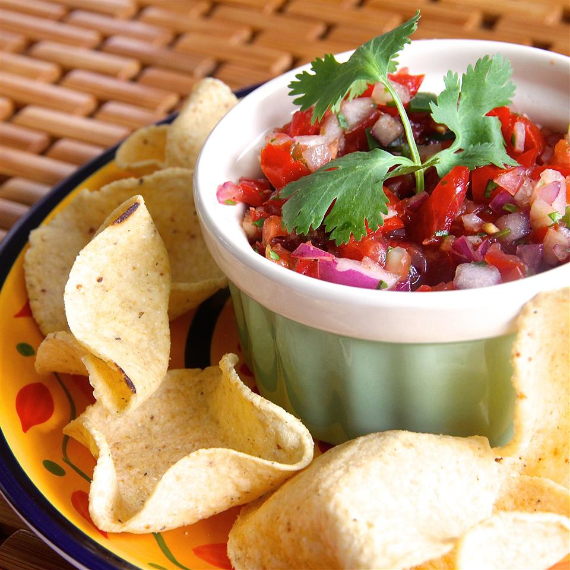

Fresh Homemade Salsa

Description
Ingredients
- 2 cups chopped tomatoes
- ¼ cup chopped red onion
- ¼ cup chopped yellow onion
- 2 tablespoons canned green chilies
- 2 tablespoons fresh lime juice
- 2 tablespoons chopped fresh cilantro
- 2 cloves garlic, peeled
- 1 teaspoon ground cumin
- ¼ teaspoon salt
Steps
- Combine tomatoes, red onion, yellow onion, green chilies, lime juice, cilantro, garlic, cumin, and salt in a food processor
- Pulse processor until mixture is combined, yet remains chunky
- Transfer to a bowl, cover with plastic wrap, and refrigerate at least 1 hour